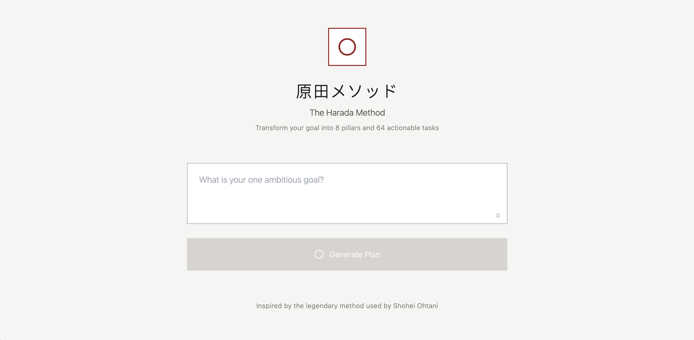
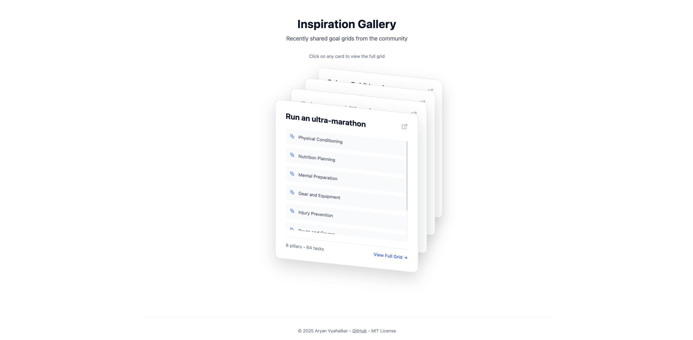
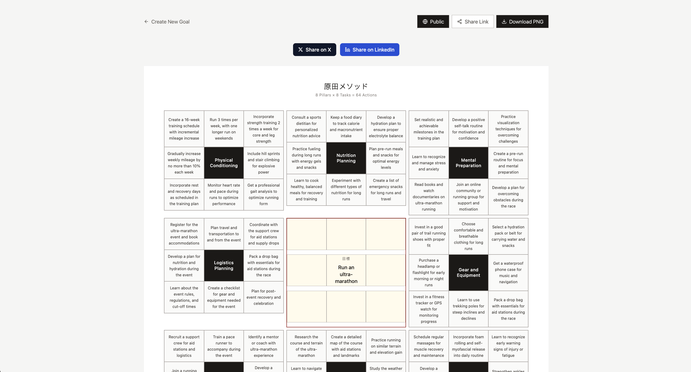

🎯
haradaAI
What
A goal-planning tool built around the Harada Method, the same goal-setting framework Shohei Ohtani used as a high school freshman when he mapped out his path to becoming the #1 draft pick.
The app takes any ambitious goal and structures it into an 8×8 grid containing 8 supporting pillars, and within it, 64 actionable tasks.
The app uses Groq's API for fast LLM inference to generate the breakdown. I implemented client-side routing with React Router and configured Vercel rewrites to handle SPA navigation, which resolved 404 errors on direct URL access to shared grids.
Source code
Below is the landing page. Pretty minimal. The "原田メソッド" directly translates to "Harada Method." What's left is to input any goal you have and hit the "Generate Plan" button.
And yes, I know exactly what you're thinking. If you input something stupid, it will give you a stupid answer.

This is what I call the Inspiration Gallery, located directly underneath the screen you just saw. Here, all grids set to "Public" (I'll get to that later) are viewable and found here, shuffling through itself.

Now lastly, we have the grid itself. As I mentioned before, you can see towards the top-right that there's a button reading "Public," as that's what it's set to right now. By default it's set to "Private," meaning only you can see it. I also added X, LinkedIn, and share link buttons to make it easier to share your grid with others.

Case Study
There are projects we build out of curiosity, and there are those we build because something in us refuses to stay still. haradaAI belonged to the latter. It began as an idea I saw on the Half Baked newsletter 🔗 (go check it out it's great): a tool that could turn abstract goals into concrete steps.
Yet I will admit, when I started, I did not fully understand the magnitude of what I was trying to create.
Context
haradaAI was born from an observation:
Most people know what they want to achieve but don't know how to structure the path there. Whether it was career goals, fitness targets, learning objectives, or personal projects, there was a gap between ambition and actionable planning.
And being the person that I am, I wanted to close it.
So I set out to build a web-based planning tool that didn't pretend to be anything more than what it was: a system for breaking down goals into manageable pieces.
Approach
I kept the interface simple. A single input field, a generate button, and a clean 8×8 grid output. No unnecessary features. No bloat.
The architecture was straightforward. React for the frontend, Groq's API for the LLM inference because of its speed, and a structured prompt that consistently generated usable breakdowns.
I designed the system so the AI would organize one central goal into 8 supporting pillars, then break each pillar into 8 specific tasks, giving users 64 concrete steps.
The grid format wasn't arbitrary. It forced clarity. Each cell had to contain something actionable, not vague platitudes.
Challenges
The first challenge was prompt engineering. Getting the LLM to consistently output 64 genuinely useful tasks without repetition or fluff took iteration.
The second was restraint. I kept wanting to add features like progress tracking, deadline management, and analytics. But each addition pulled the tool further from its core purpose: just generate the damn grid.
And the third was handling edge cases. Vague goals produced vague outputs. Overly complex goals got mangled. I added basic input validation and guardrails, but ultimately, garbage in meant garbage out.
But I came across the most difficult part later in development. I realized that simplicity is not the absence of complexity, but its containment. I discarded feature after feature. Stuff like history logs, persistent profiles, theme variations. And all because they weighed the system down with a kind of greed.
Outcome
haradaAI does what I built it to do. People use it to structure their goals. Some share their grids publicly. Others keep them private. The tool doesn't try to motivate you or track your progress. It just gives you the breakdown and gets out of your way.
In building it, I learned that the best tools are often the simplest ones. When you resist the urge to overcomplicate, what remains is actually useful.
Tech Stack
Frontend
- React 18 with TypeScript
- Vite
- Tailwind CSS
- Lucide React (icons)
- html2canvas (PNG export)
Backend
- Supabase (PostgreSQL database)
- Supabase Edge Functions (Deno runtime)
- Groq API (Llama 3.3 70B model)
Deployment + dev tools
- Vercel
- ESLint
- PostCSS